The reader's verdict was unusable. This round measures that verdict instead of arguing with it: what the drawing prints, what it leaves out, what the two named widths change, and what a picture that conveys a pipeline would have to show instead.
The one-paragraph answer. The drawing does not convey a pipeline. It conveys an ordered row of titled
rectangles joined by a one-pixel line, with a three-pixel tick at each exit and four mark colours for state. It answers
sequence and, in position mode, roughly where the run is. It does not answer what a stage does, who acts in
it, what its gate checks, what a refusal leaves behind, what a loop's cap has been spent on, or how long a stage has
run. Measured: the cards print 4, 32 and 68 words of definitions that hold 104, 415 and 450 — 3.8%, 7.7%
and 15.1% of the pipeline's own prose. A gate is a 3×15 px mark with 0 characters of visible text. At
thirteen stages the default view shows 9 of 13 with 468 px hidden and now says so; fit brings
all thirteen in, but a run parked at stage 11 still opens with stage 11 off screen. This is not a rendering bug to
polish; it is a picture that leaves out the nouns the reader needs.
This round was spawned at f00c0e0 and measured that drawing. Round 5C landed on main during the run
(6ba1e85, 9a521e6, 5cd412e, 58ab40a): thirteen stages fit, and the
scroller prints what it is hiding. This branch was rebased onto 58ab40a and, after main moved again, onto
6cd6426 (1.4.1), whose public/pipeline-flow.js and public/pipeline-modal.js are
byte-identical to 5C's; the harness was re-run on it. Every number below is at 6cd6426, and each case that
fit applies to is measured twice — default and fitted. The reader's attachment predates 5C and is kept as the
baseline complaint; the two-stage drawing it shows is unchanged by 5C, so it is still what the reader sees for that
definition.
The visibility half is now answered; the content half is confirmed. 5C's count and fit are a real
improvement: at thirteen stages the scroller says “4 of 13 stages and 4 of 13 notches out of view” and one press
brings all thirteen in at 72.8 px columns, at both widths. What 5C did not change is what the cards say: one to seven
words per stage, 67–97% of every card blank, every gate a 3 px tick, the marks index-derived, the refusal reasonless, and
the stage the run is in off screen until the reader finds the fit control. The reader is asking for the pipeline's nouns —
stage, actor, gate, loop cap, position, mark — and the picture still prints only the first as a title.
The attachment is 2026-11-04T07-15-18-image.png, 1979×435. The flow card in this build measures
1120×247.7 CSS px; at 176.7% that is 1979×438, and the attachment is 1979×435 — the same card, three pixels
cropped to its content. So the baseline is the same dialog this round reproduces, captured at about 177% zoom: the
github-investigate definition, two stages, edit mode.
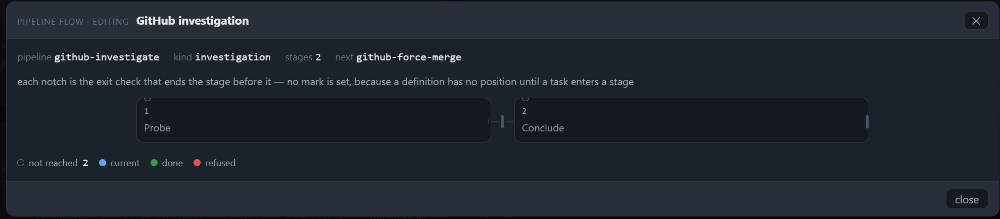
Read as a reader, not as a test: the dialog says “GitHub investigation”, then pipeline
github-investigate, kind investigation, stages 2, next github-force-merge,
then a 29-word sentence explaining that a notch is an exit check, then two very wide, very short rectangles.
Inside the first: a small 1 and the word Probe. Inside the second: a small 2 and the word
Conclude. The rest of both rectangles is empty. There is no verb, no owner, no check, no time — nothing that says
what either stage is for. The only sentence that explains the picture is the note, and the note is about the notation.
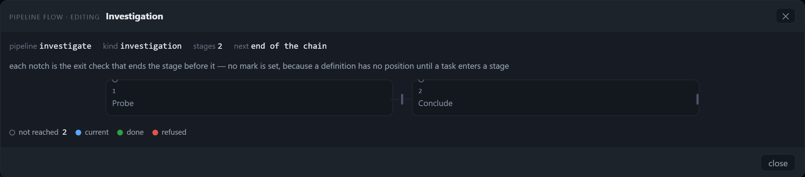
The measurement makes the reader's word concrete: a 400-pixel-wide card holds a one-word title at 11.5 px. Ninety-seven percent of the card is background. The card is not a container for information; it is a container for a label, and the label is one word.
tools/verify-pipeline-flow-usability.mjs boots a throwaway panel of this checkout — its own
PANEL_CONFIG, jobs store, pipelines.json, an ephemeral port, a dead apiServer, the
board assistant off — and drives it with Chromium at 1280×800 and 1821×700, device scale factor 2 for the
shots. It measures in CSS pixels at the viewport:
Range over each text node. A flex
item stretches to its column, so the element's rect is not the text; the Range is. Empty ratio =
1 − inkArea / nodeArea.[data-pm-flow]) and on the definition or bundle it
was made from — title, description, every stage prompt, every exit check and its parameters, every gate name, decider,
decision path, outcome and loop cap. "4 of 104" means four words printed against 104 words held.aria-label and title are recorded separately, with their lengths.data-marks-from, the current card's rect against the scroller's box, and
scrollLeft/scrollWidth.[data-pflow-fit],
records the fitted state, and presses again. The count sentence, the column width, the hidden pixels and the current
stage's visibility are compared between the two states.The fixtures are shaped like the real data. The two- and seven-stage cases are the seed's own investigate
and sefl-review-loop definitions; the thirteen-stage definition is written into the catalogue for the
acceptance case (the seed's longest is seven), each stage carrying a prompt and a parameterised exit check. The long run is
a studio bundle with thirteen stages, one gate (L1 · scope agreed, decider architect, decision
decisions/long-1.json, outcomes go/no-go) and one six-column loop st12 → st6, cap
3 rounds, parked at stage 11. The raw ledger is in
pipeline-flow-usability-round/ledger.json.
Partly — and now with a way out, one press away. In edit mode every card carries a small ordinal at 9.5 px
(1…13) and every stage is drawn not reached, because a definition has no position. In
position mode at five stages the header says 4 of 5 — Build it and the current card is blue; the whole run
fits, so the position is legible.
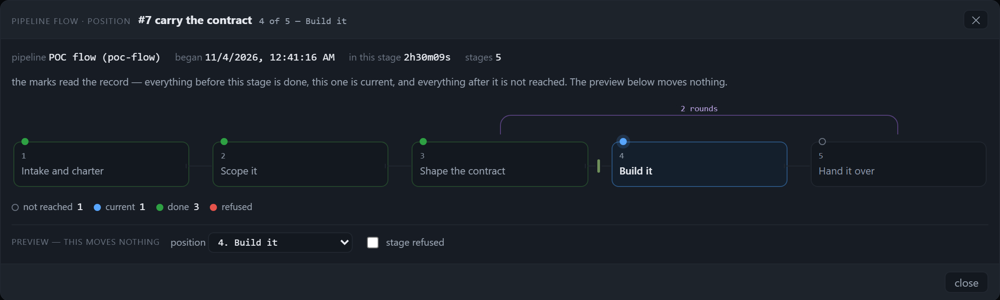
4 of 5 — Build it;
three green cards, one blue current card, one grey; the gate after S2 is the 3 px tick; the loop is the arc above. The
position is legible because the whole run fits, and because the header repeats it in words.At thirteen the default view still hides four stages — but 5C's scroller now says so and offers fit:
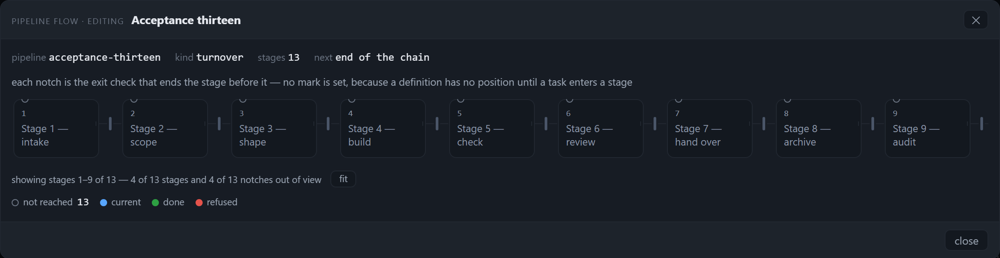
showing stages 1–9 of 13 — 4 of 13 stages and 4 of 13 notches
out of view, with a fit button beside it. The drawing no longer lies about its length; it still hides
the four stages until the reader acts.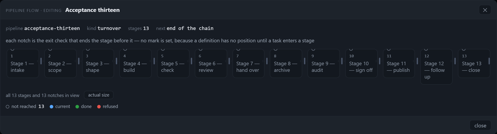
fit. Thirteen columns of 72.8 px,
scrollWidth 1094 = clientWidth 1094, count all 13 stages and 13 notches in view. Titles wrap to
two or three lines in places (card heights 66.6 and 81.6); nothing is hidden. This is the first state in which the whole
run is a picture.A run parked at stage 11 still opens with stage 11 off screen, and the count names four hidden stages without naming the current one:
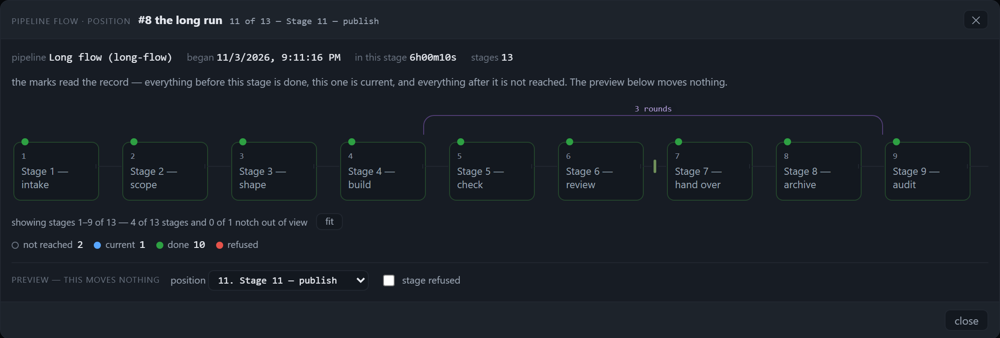
11 of 13 — Stage 11 — publish.
The picture shows stages 1–9, all green, and stage 11 is 128 px past the scroller's right edge
(scrollLeft 0, scrollWidth 1562 against clientWidth 1094). The count says
showing stages 1–9 of 13 — 4 of 13 stages and 0 of 1 notch out of view; it does not say the current stage is
one of the four. The one blue card the reader needs is the one card not on screen.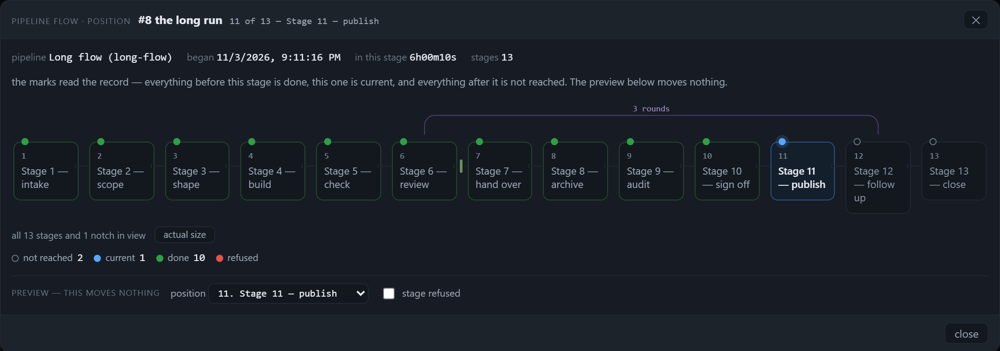
fit. Count all 13 stages and 1 notch in view; the blue
current card (11) is on screen for the first time; the loop arc's ends now sit on the stages it joins (0 / −0.1 px off
centre). The position is visible and the arc's geometry is correct in this state.Measured at both widths: default 9 of 13, 468 px hidden, scrollLeft 0, current stage at x=1315
against a scroller that ends at 1187 — not visible; fitted 13 of 13, 0 px hidden, 72.8 px columns, current
stage on screen. So the answer to “where does it sit” is yes, after one deliberate press of fit, and no on
open — and the control sits at the bottom of the drawing, under nine cards, not at the position marker.
No. The card prints the title and the ordinal and nothing else. The stage's prompt — the instruction that says what the stage does — is not drawn in either route. Measured against the definitions' own prose:
| Case | Stages | Words on cards | Words in the definition | Printed | What is printed |
|---|---|---|---|---|---|
| Two-stage definition | 2 | 4 | 104 | 3.8% | 2 titles + 2 ordinals |
| Seven-stage definition | 7 | 32 | 415 | 7.7% | 25 title words + 7 ordinals |
| Thirteen-stage definition | 13 | 68 | 450 | 15.1% | 55 title words + 13 ordinals |
| Position, five-stage bundle | 5 | 18 | 151 | 11.9% | 13 title words + 5 ordinals |
Per card, measured: 1 word (two-stage), 1–7 words with a median of 3 (seven-stage), 4–5 (thirteen-stage), 2–3 (position). Every card's title is set at 11.5 px and its ordinal at 9.5 px; the legend is 10.5 px and the loop label 9.5 px — nothing on a card is larger than 11.5 px. The emptiest card measured is 97.5% blank (400×51.7, "Probe"); even the densest, a fitted 72.8×81.6 column holding a three-line title, is 33% filled. 5C's count adds one sentence about the drawing (7–19 words) and no word about a stage.
The prompts are 25–104 words per stage and are never drawn; the artifact a stage writes is not drawn in either route in
practice. A definition carries none, and the catalogue projection the position dialog reads sends each stage as
{id, title, position} only (lib/task-pipeline-assign.js:92) — the artifact is
dropped before the drawing sees it. A reader who wants to know what "Answer the review" does has to leave the dialog.
No — there is no actor on the drawing at all. A definition has no actor field. A bundle's gate has a
decider, but it is printed only inside the notch's 97-character hover title: gate g2 · contract signed —
decides decisions/2.json (go, no-go) — on artifact-2 — decider reader. The substring test over the drawing's printed
text returns NONE for the gate name, the decider, the decision path and the outcomes. The stage's own
owner/role never reaches the drawing: lib/pipeline-bundle.js reads five things per pipeline
(stages in order, prompts, artifacts, gates, handoffs) and deliberately drops the rest, owner included. So the one thing a
reader most wants next to "Wait for the approval at the head" — whose approval — is absent from the data the
drawing receives, not merely hidden from it.
No. Every gate is the same 3×15 px vertical tick, in the 26 px gap between two cards. In the DOM its
textContent is 0 characters in every case measured; the meaning lives in an aria-label of
89–186 characters and a title of 52–129 characters. Thirteen stages produce thirteen ticks and no words. The
facts line names the pipeline, the kind, the stage count and the next definition; it does not name a gate either. In a
screenshot, a printout, or a glance, the gate is a three-pixel amber mark:
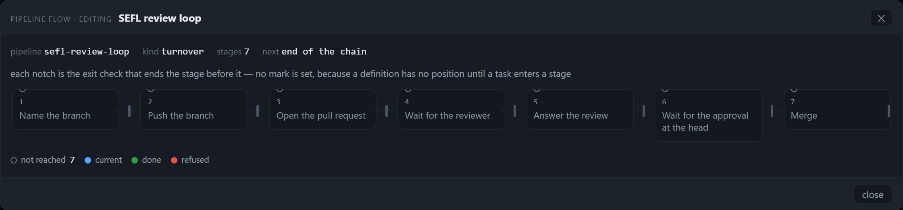
Name the branch, Push the branch, Open the pull request, Wait for the
reviewer, Answer the review, Wait for the approval at the head, Merge, and
the ordinals. Not one word says branch-name, pushed, pr-open,
pr-comments or pr-merged — the checks that actually end those stages.Refusal: a red rectangle, no reason, and a header that contradicts it. The only producer of a refusal in the
whole app is the preview checkbox in the position dialog; the real caller passes { stage } and nothing else
(public/assistant.js:3462), so a refusal cannot arise from a real run. When the preview is
checked, the card turns red and the legend counts refused 1 — and the header still says 4 of 5 — Build
it while the picture shows stage 3 refused and no current stage at all. No gate name, no outcome, no
no-go, no next step:
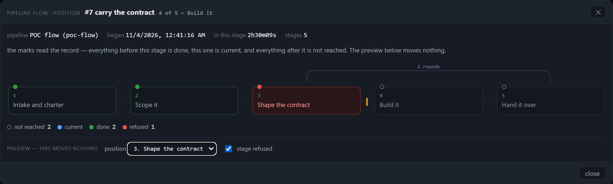
4 of 5 — Build it; the red card is 3 Shape the
contract; legend current 0 · refused 1; the gate after S2 is ahead. The picture and the
header describe two different positions, and nothing on the red card says why it was refused.Loop: a purple arc and a cap sentence at 9.5 px. The cap is printed — 2 rounds — and that is the one
piece of loop vocabulary the picture gets right. What it does not print is what has been spent: the label is
2 rounds, never 1 of 2, because the caller never passes the record's crossings. On a
long pipeline the arc is worse than uninformative — it is misplaced. The arcs layer is laid out at the track's box
width (1090) while the grid columns overflow to 1655, so a st12 → st6 loop is drawn from x=554 to x=1069
instead of from st6's centre (753) to st12's centre (1485): 199 px left of the stage it re-enters and 416 px short of
the stage it leaves, a drawn width of 515.1 px against a correct 732. In the screenshot it reads as a loop from stage 9
back to a point between stages 4 and 5. Press fit and the same arc ends on both centres (0 / −0.1 px), because
the track now fits its box: the misplacement is a property of the unfitted state, not of the arc formula. The
default is the state with the wrong picture.
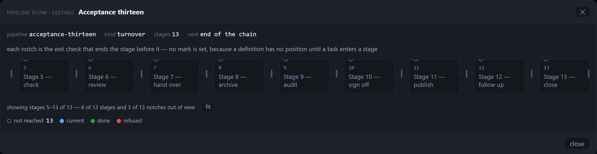
showing stages 5–13 of 13 — 4 of 13 stages and 3 of 13 notches out
of view. The count follows the scroll; the picture still shows nine of thirteen until fit.Only the current stage, only in the facts line, only in position mode. The facts read began 11/4/2026,
12:41:16 AM · in this stage 2h30m09s · stages 5. No card carries a time. The queue record the position dialog reads
carries only the current stage's enteredAt, and the dialog prints it once, in the header. The long run says
in this stage 6h00m10s while all ten green cards before it show nothing at all. A tree's own pipeline record
does keep a history of {stage, at} hops (pipeline-records.json), which is enough to
time every stage — but the flow does not read or draw it. A reader cannot compare stages, spot the one that has been stuck
for six hours by looking at the picture, or tell whether a gate has been waiting longer than the stage.
At 1280×800 and at 1821×700 the flow card is 1120 px wide and its scroller 1094 px — identical. Only the card's x moves, from 80 to 350.5 (270.5 px), because the card is centred in a wider window. Every node width, every font size, every hidden pixel is the same at both:
| Measurement | 1280×800 | 1821×700 | What the wider window buys |
|---|---|---|---|
| Card | 1120×247.7 at x=80 | 1120×247.7 at x=350.5 | 0 px of card |
| Body / scroller | 1118 / 1094 | 1118 / 1094 | 0 px of drawing |
| Two-stage columns | 400 each | 400 each | 0 px per stage |
| Thirteen-stage columns | 96 each, 468 px hidden | 96 each, 468 px hidden | 0 px more visible |
Thirteen-stage after fit | 72.8 each, 0 hidden | 72.8 each, 0 hidden | 0 px — one control, both widths |
| Count row | showing stages 1–9 of 13 … · fit | same sentence, same control | nothing new to read |
| Share of the window the dialog occupies | 87.5% | 61.5% | a wider backdrop |
Every case was captured at both widths. The seven-stage pair is 03-seven-1280 / 04-seven-1821; the long-run pair is 10-long-1280 / 11-long-1821, with the fitted state at 10b-long-fit-1280 / 11b-long-fit-1821. The card is the same size in both of each pair; only its x changes.
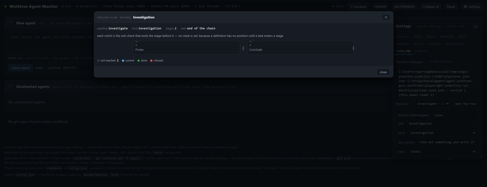
The position dialog's note says: “the marks read the record — everything before this stage is done, this one is
current, and everything after it is not reached.” The DOM says otherwise:
data-marks-from="index" in every real position case measured. The caller passes only
position: { stage: current.id } (public/assistant.js:3462); it never passes
ran, crossings, waitingFor or via, although the renderer accepts all
four. Four consequences follow, and each one removes an answer the reader asked for:
waitingFor is never supplied, so the one state a
reader asks about — "what is it waiting on?" — can never be drawn, even though the notch has a state for it and an
aria-label that would say "waiting on … since …".crossings is never supplied, so a capped loop is always
2 rounds/3 rounds, never 1 of 2 or at its cap.This is worth separating from the drawing's own defects: the renderer was built to carry state, and the one caller with a record does not hand it over. The usability round does not fix it, but it records that the picture is being asked to tell the truth with one field of evidence.
The critique already fixed the vocabulary: stage, actor, gate, loop cap, position, mark. The table is the spec; today's column is what this round measured. The drawing must print the nouns, not decorate the boxes.
| Word | The data already holds | What the picture shows today | What it must show |
|---|---|---|---|
| stage | title + a 25–104 word prompt + the artifact it writes | title (1–7 words) and an ordinal; 67–97% of the card blank | title, one line of what it does (the prompt's first sentence), and the artifact — the card earns its width |
| actor | the bundle's owner.role; the gate's decider | nothing; the decider is in a 97-character hover title only | the owner printed on the card, the decider printed on the gate; the loader must stop dropping owner |
| gate | name, decision path, outcomes, decider, refuses_when | a 3×15 px tick with 0 visible characters | a labelled barrier: name + decider + outcome, or a numbered tick with a keyed list that is visible at the same time |
| loop cap | cap, crossings (when the caller passes them) | “2 rounds” at 9.5 px; no used/limit; on a long track the arc lands on the wrong stages | “1 of 2 used”, what happens at the cap, and an arc that ends on the stages the data names |
| position | stage id + enteredAt; the header's “11 of 13” | a count and a fit press now fix visibility, but the current card is still off screen on open and the count does not name it | the current card on screen at open (default to the fitted view, or auto-scroll), plus an overview ruler that marks the position in the whole run |
| mark | four marks + counts; the record's ran/crossings/waitingFor | four colours, counts in the legend, index-derived in the real caller; a refusal with no reason | keep the four colours and counts; derive them from the record; put the reason for a refusal in words next to the red card |
This is a document mock, not the product: 300 px wide instead of 96–400, four lines instead of two, and every word the data already holds printed where a reader can see it. It is smaller than the 400 px blank rectangle it replaces.
Publish the signed artifact to the UAT instance and record the install verdict.
decisions/3.json (go / no-go) · answered 08:20Three structural requirements follow from the measurements, beyond the words on a card:
actual size as the reader's deliberate zoom; or show the whole run as an overview ruler with the current stage
marked, and let the reader open one stage at a time.S2 · high The default view still opens without the stage the run is in — but 5C gives
the reader the count and the way out. At thirteen stages, 9 of 13 are visible and 468 px are hidden at both widths. The
count reads showing stages 1–9 of 13 — 4 of 13 stages and 4 of 13 notches out of view, and one press of
fit brings all 13 in at 72.8 px columns (13/13, 0 hidden), with the current stage on screen. But a run at stage
11 still opens with stage 11 128 px past the scroller's right edge, and the count does not say that the current stage is one
of the four. The fix exists; the default hides the answer, and the control sits at the bottom under nine cards.
S1 · blocker The drawing prints 3.8–15.1% of the pipeline's words. Cards carry a title and an ordinal only: 4 of 104 words (two-stage), 32 of 415 (seven), 68 of 450 (thirteen), 18 of 151 (position). No prompt, no artifact, no actor, no gate text, no duration. The 29-word note above the drawing is longer than the entire two-stage drawing (4 words on cards).
S1 · blocker Every gate is an unlabelled 3×15 px tick. Thirteen stages, thirteen
ticks, zero characters of visible text. The check's name and parameters live in a 52–186 character
aria-label/title; the gate name, decider, decision path and outcomes are printed nowhere. A
reader cannot answer “what does this gate check?” from a screenshot, a printout, or a glance — only by hovering one 3 px
target at a time.
S2 · high The marks are index-derived in the only caller that holds a record.
data-marks-from="index" in every position case; the note claims “the marks read the record”. The caller passes
{ stage } only (public/assistant.js:3462), so ran,
crossings, waitingFor and via are never used: after a loop a stage that ran is drawn
not reached, a gate can never be drawn waiting, and a loop can never show its use.
S2 · high A refusal is a red box with no reason, and it contradicts the header.
The preview at stage 3 turns the card red and the legend to refused 1, while the subtitle still says
4 of 5 — Build it and the legend says current 0. No gate, outcome, reason or next step is
printed. The preview checkbox is the only producer of a refusal in the app; a real run cannot produce one.
S2 · high On an overflowing track the loop arc is drawn on the wrong stages.
st12 → st6 is drawn from x=554 to x=1069 instead of 753 to 1485: −199 px at its left
(re-entered) end, −416 px at its right (leaving) end, drawn width 515.1 against a correct 732. The arcs layer is
the track's box width (1090) while the columns overflow to 1655 (public/style.css:4051,
public/style.css:3998). The picture makes a false claim about which stages loop — the one
graph claim it was supposed to make. In the fitted state the same arc lands on both centres (0 / −0.1 px): the default is
the wrong state, and the count under the drawing counts notches, not arc correctness, so it cannot warn about this.
S3 · medium The cards are mostly empty. 97.5% and 96.3% of the two-stage cards (400×51.7, ink 506.9/774.1 px²), 71.5–92% of the seven-stage cards (mean 79.3%), 73.4–80.8% of the thirteen-stage cards (mean 78.2%; fitted, 66.8–74.7%, mean 71.8%), 85.4–94% of the position cards (mean 89.8%). A 400 px card holds one word at 11.5 px; the width is not doing any work, and fitting thirteen stages only moves the mean from 78% to 72% blank.
S3 · medium “How long” is only the current stage, only in the facts line.
in this stage 2h30m09s (five-stage) and 6h00m10s (long run) sit in the header; no card shows a
time, and the position dialog's own record carries only the current stage's enteredAt. The reader cannot see
which stage is stuck from the picture.
S3 · medium The two named widths are one drawing. Card 1120, scroller 1094, node widths (96 default, 72.8 fitted) and hidden pixels (468, then 0) identical at 1280 and 1821; only the card's x moves by 270.5 px. The wider window gives 0 px to the pipeline, makes the dialog 61.5% of the window instead of 87.5%, and changes neither the count nor the fit. The width the reader chose buys a better-centred card, not a wider pipeline.
S3 · medium The loop prints its cap but not its use. 2 rounds at 9.5 px,
never 1 of 2 or at its cap; crossings is never supplied. The arc label is one of the two
smallest texts in the drawing (9.5 px, with the ordinals) and the only place a loop says anything.
showing stages 5–13 of 13 … at the far end); fit brings
13/13 stages and 13/13 notches into view at both widths, keeps the count printed, and leaves every title untruncated at
11.5 px. This is the part of usability that improved this round; it should not be traded away.aria-hidden connector, has a real
aria-label (89–186 chars) and a title; a screen-reader user can hear what the picture does
not show.sefl-review-loop), so the
acceptance case writes a thirteen-stage definition into the catalogue. It carries a prompt and a parameterised exit check
per stage, which is what the real seed definitions carry; it does not carry gates or loops, because a definition cannot.
The rich gates/loops case is the bundle (long-flow), which is a fixture shaped like the studio's
pipeline-bundle.seed.json (13 stages, 5 gates, 3 loops there; 13 stages, 1 gate, 1 loop here). Both are
measured in the default state and after 5C's fit press; the fitted numbers are the -fit cases
in the ledger.github-investigate definition differs from the investigate one reproduced here, but the
geometry (two 400×51.7 columns, 146 px dead each side, two amber ticks) is identical.public/pipeline-flow.js, public/style.css and public/app.js
were not edited; #124 holds them. This round measures and specifies.The harness is committed with the report and takes about a minute:
node tools/verify-pipeline-flow-usability.mjs --shots <dir> --json <file>It prints every case's card geometry, ink area and empty ratio, the words printed against the words held, the notch
sizes and their aria/title lengths, the count sentence and fit state, the marks rule, the current stage's visibility, the
arc offsets and the two widths' differences. It writes *.png at DPR 2 and the raw ledger beside the shots. The
ledger used for this report is ledger.json; the shots
are in pipeline-flow-usability-round/.